2026 年 10 月 27 日 · TeachingBuildingCampusXR · 七项修改已保存。以下为 Unity 编辑器渲染截图，点击可查看原图。
401 样板检查后已推广至 8 间教室。已通过场景物理检查及 Play 模式交互检查，包括模拟 Quest 右手 A 键报警和四层毛巾拿取、打湿、归还。
头显实机尚未验证。原有任务和静态路线指引按修改范围保留，B 路线箭头仍可能指向断梯。现有 Windows 发布包未重新打包。
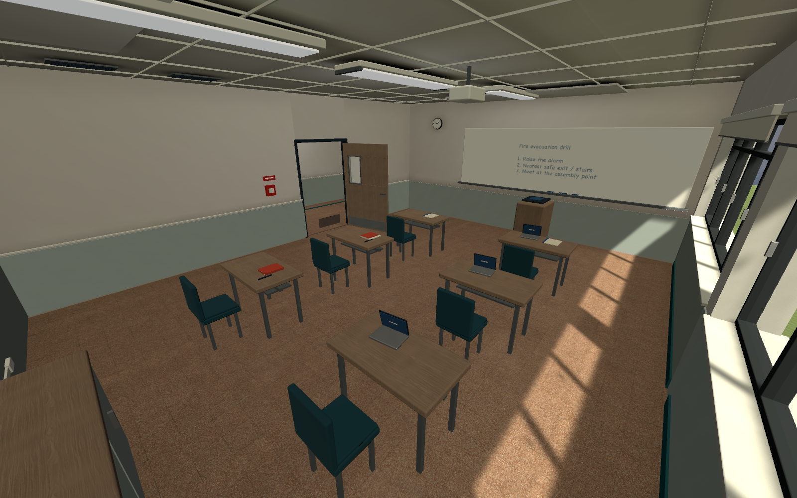
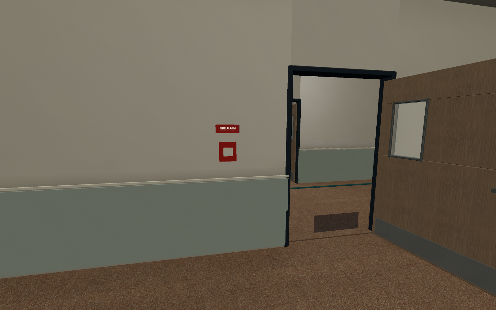
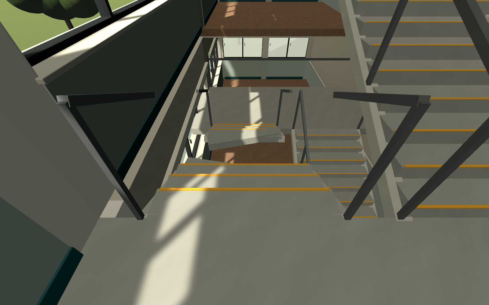
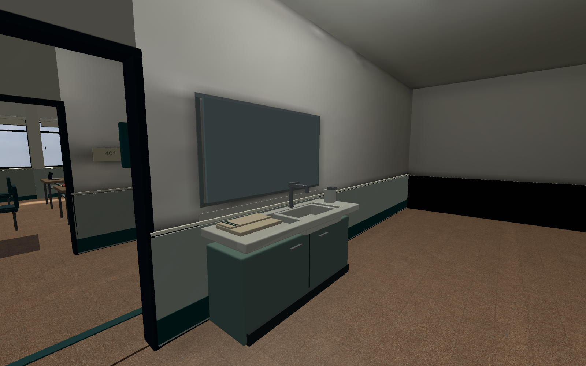
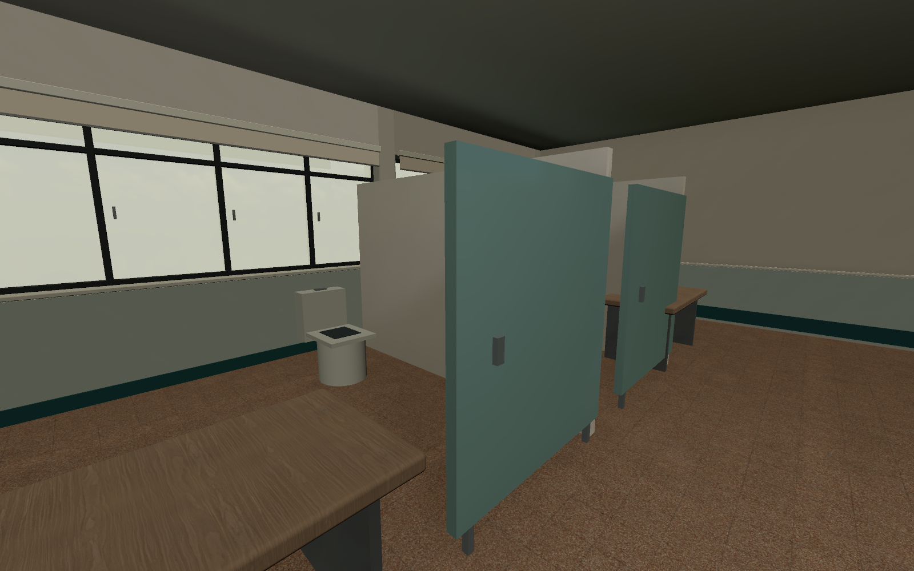
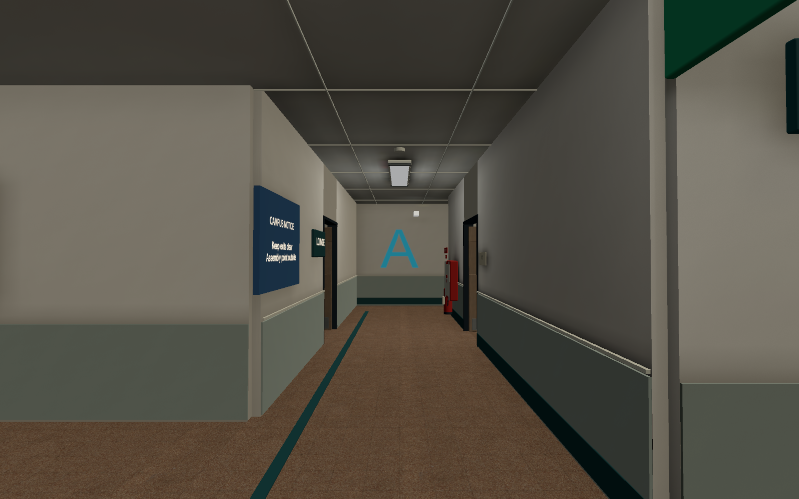
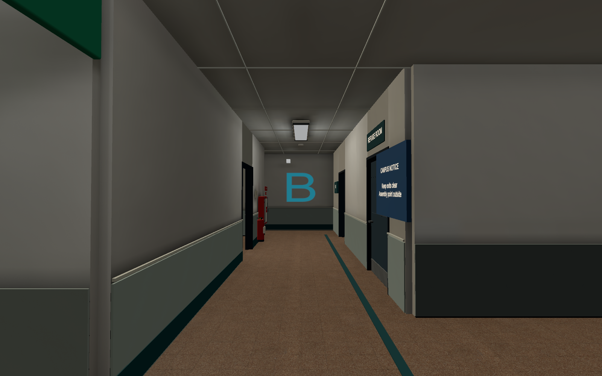
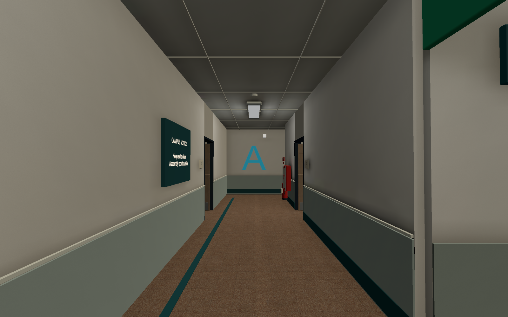
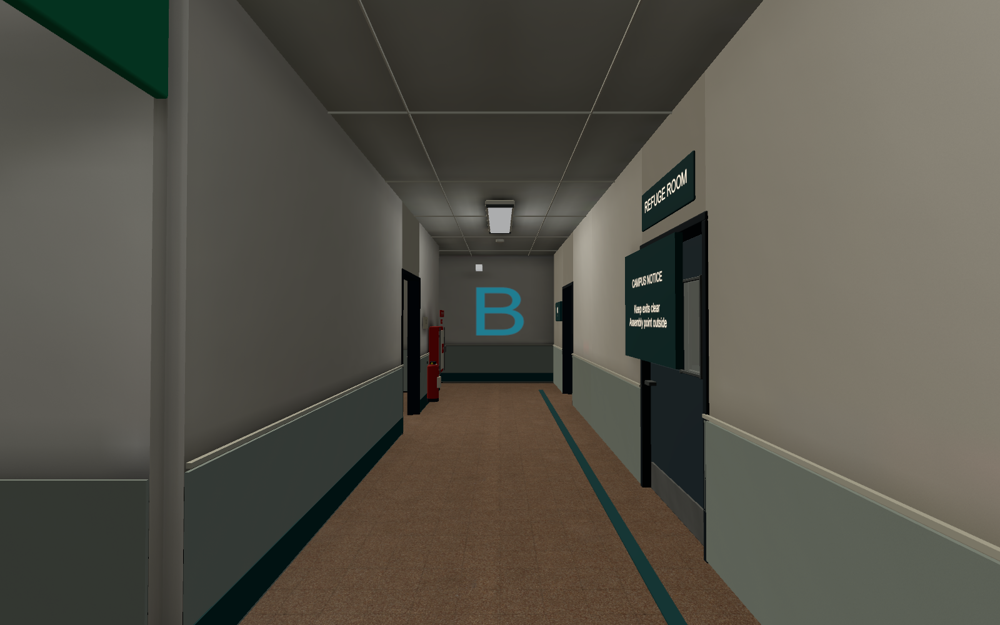
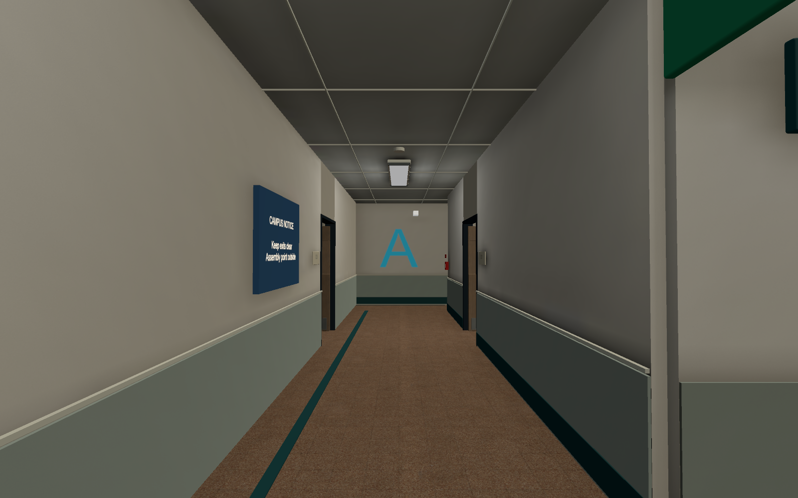
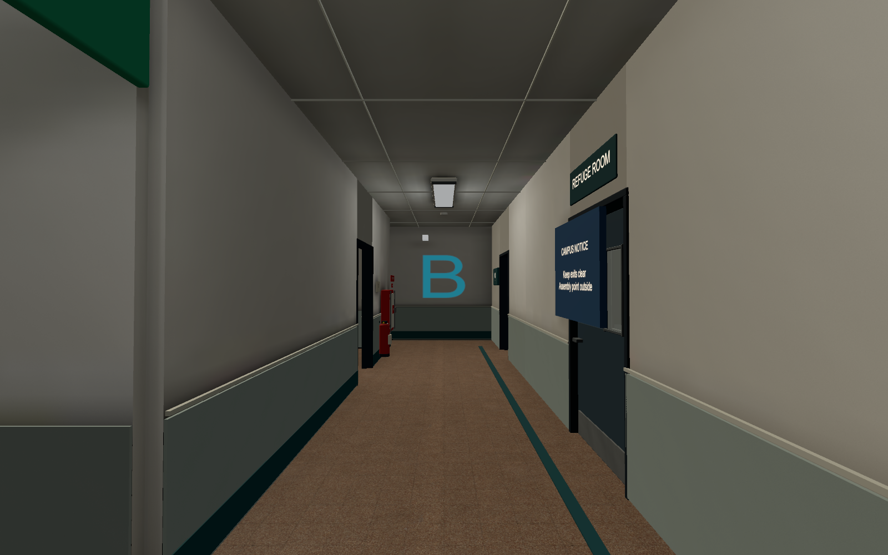
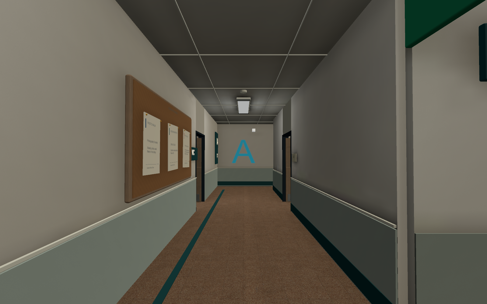
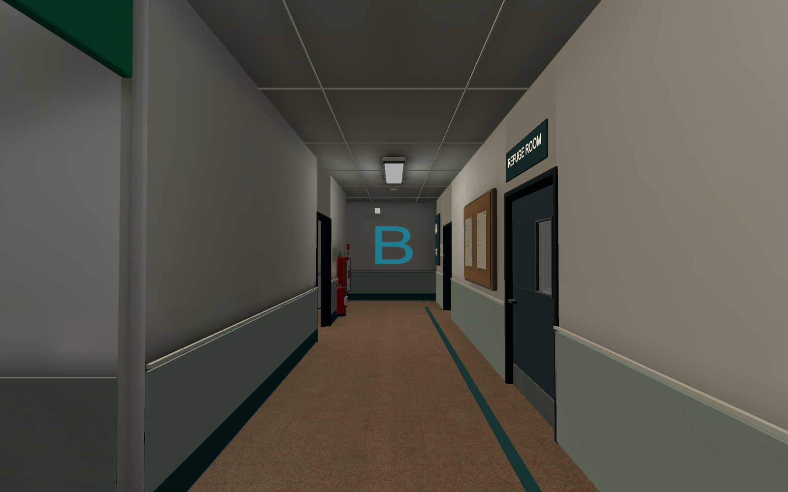